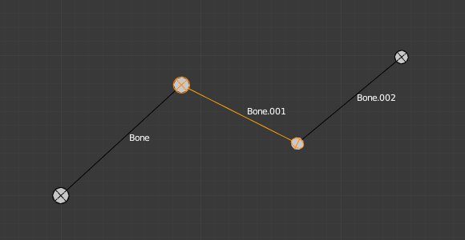

显示面板¶
参考
模式: 物体、编辑和姿态模式
面板:

显示面板。
这可以控制骨骼在3D视图中的显示方式;您可以选择四种不同的可视化方式。
Bone Types 骨骼类型¶
Blender有四种基本的骨骼可视化方式：八面锥，棍形，样条骨，封套和线框：

八面锥骨骼显示。 |

棍形骨骼显示。 |

样条骨骨骼显示。 |

封套骨骼显示。 |
- Octahedral bone 八面锥骨骼
这是默认的可视化，适合大多数编辑任务。它实现：
- 骨骼首端（“大”关节）和尾端（“小”关节）。
- 骨骼“大小”（其厚度与其长度成比例）。
- 骨骼扭转（因为它有一个方形部分）。

注意Bone.001 骨骼扭转40°。
- Stick bone 棍形骨骼
这是最简单和最无侵入的可视化。它只是通过固定（和小）厚度的棍形来实现骨骼，所以它没有给出关于首端和尾端的信息，也没有关于骨尺寸或扭转角度的信息。

请注意，Bone.001扭转（滚动）角度不可见（除XZ轴外）。
- B-Bone bone 样条骨骨骼
这种可视化显示了“平滑”多分段骨骼的曲线;有关详细信息，请参阅 Bendy Bones 软骨骼 。

在编辑模式样条骨的骨架。

相同的骨架在物体模式。
- Envelope bone 封套骨骼
这种可视化实现了骨变形的影响。更多关于这一方面的参考骨骼页面 bone page。

- 线框
这个最简单的可视化显示了“平滑”多分段骨骼的曲线。

在姿势模式线框模式显示的骨架。
相同的骨架在编辑模式。
{kind=link}
Draw Options （显示选项）绘制选项¶
- Names 名称
- 启用时，显示每个骨骼的名称。
- Colors 颜色
- 这仅适用于 姿态模式， 这里 有做具体描述。
- Axes 轴向
- 启用时，显示每个骨骼的（局部）轴（仅与 编辑模式 和 姿态模式 相关）。
- X-Ray 透视模式
- 当启用时，骨架的骨骼将始终显示在固体物体（网格，曲面，...）的顶部，即它们始终可见和可选(这与 对象数据 标签的 显示 面板一样的选项)。当不在 线框 模式时非常有用。
- Shapes 形变
- 启用时，在 物体模式 和 姿态模式 下，使用选定物体的形状(详情请参阅 自定义形状骨骼 )，替换默认标准骨骼形状。
- Delay Refresh 延迟刷新
- 启用时，骨骼在姿态模式下操作骨骼时不会使其子级变形。